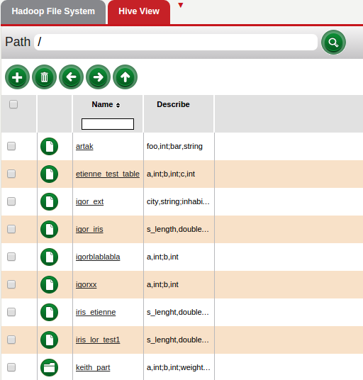
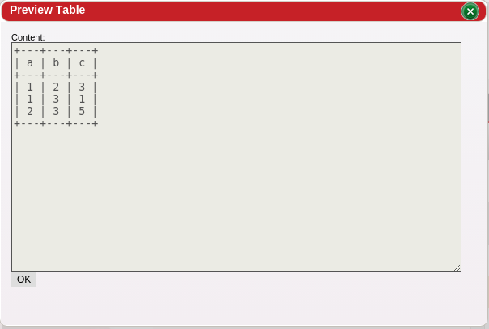

Hive View displays all the tables in Hive. It gives a description of the columns and the variable type used for that column. It is important to know what the variable types are when building a workflow so that input and output for actions match up.
In order to set up Hive view, the setting Hive jdbc URL needs to be filled out.

Hive View allows for previewing tables and partitions

return to Red Sqirl help